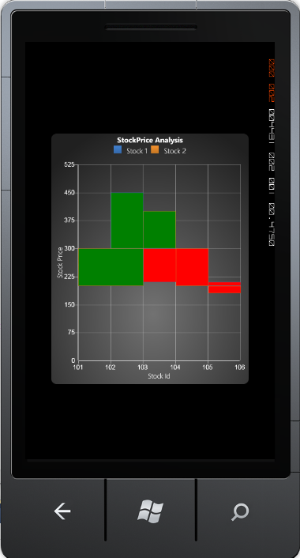

Three Line Break chart is similar to the Point and Figure chart. The Three Line Break chart is so named because of the number of lines typically used. It displays a series of vertical boxes ("lines") that are based on changes in prices. It ignores the passage of time.
The Three Line Break chart looks like a series of rising and falling lines of varying heights. Each new line, like the X's and O's of a point and figure chart, occupies a new column. Based on closing prices (or highs and lows), a new rising line is drawn if the previous high is exceeded and a new falling line is drawn if the price hits a new low. Change in price trends are highlighted by changing colors. Use the PriceUpColor to indicate bullish trend and PriceDownColor to indicate bearish trend.
The following code example illustrates how to create a Three Line Break Chart.
|
[XAML]
<syncfusion:ChartSeries Type="ThreeLineBreak" Label="Stock 1" DataSource="{StaticResource data1}" BindingPathX="StockId" BindingPathsY="MaxStockPrice, MinStockPrice, OpenPrice, ClosePrice, PurchasePrice"> </syncfusion:ChartSeries>
<syncfusion:ChartSeries Type="ThreeLineBreak" Label="Stock 2" DataSource="{StaticResource data2}" BindingPathX="StockId" BindingPathsY="MaxStockPrice, MinStockPrice, OpenPrice, ClosePrice, PurchasePrice"> </syncfusion:ChartSeries>
|
|
[C#]
ChartArea area = new ChartArea();
// Creating Three Line Break Chart. ChartSeries series = new ChartSeries(); series.Type = ChartTypes.ThreeLineBreak;
// Initializing chart data. series.DataSource = this.Resources["data1"] as StockInfoData; series.BindingPathX = "StockDate"; series.BindingPathsY = new List<string>() { "High", "Low" };
area.Series.Add(series); |

Figure 52 : Three Line Break Chart